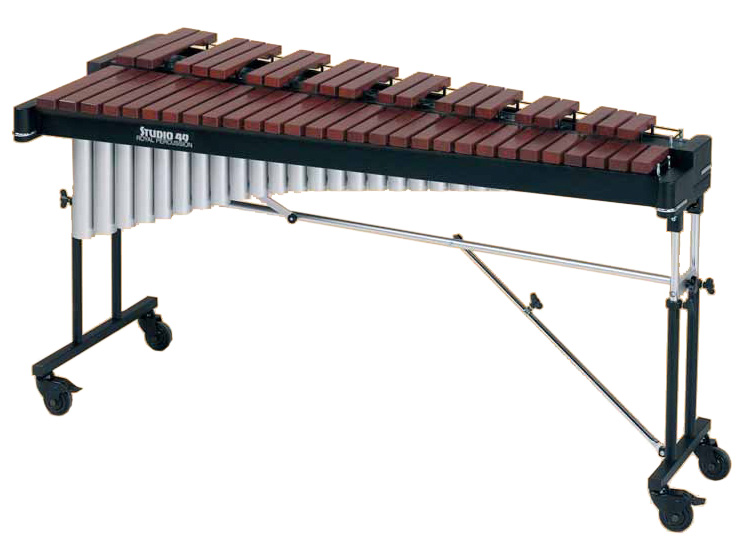
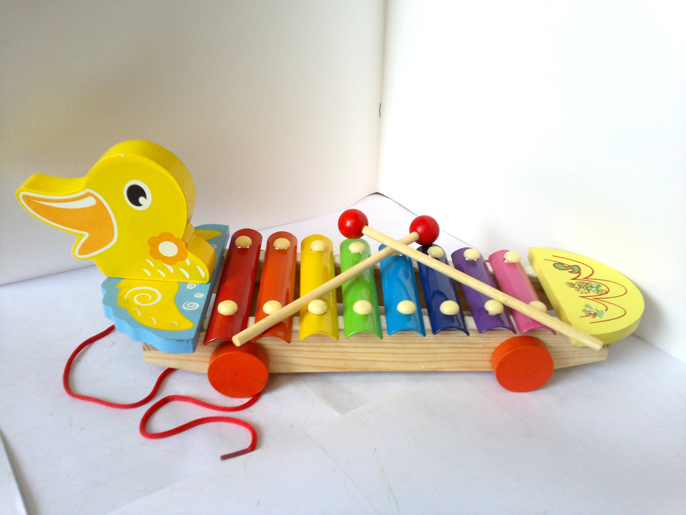
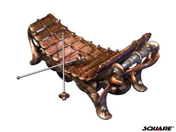

According to Wikipedia, "An idiophone is any musical instrument which creates sound primarily by way of the instrument's vibrating, without the use of strings or membranes". There are struck idiophones, friction idiophones, and plucked idiophones. The idiophones we look at on this site are struck idiophones, and are also pitched percussion instruments, meaning they produce distinguishable musical notes when hit.
| Idiophones | ||
|---|---|---|
 |
||
|  |  |  |